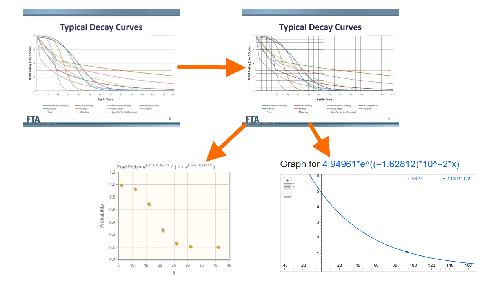

State of Good Repair Visualizations
The Problem
Defining State of Good Repair
...for an inhomogeneous system of assets.
- What factors do we take into account?
- How do we normalize for scale?
- Large agencies vs. small agencies
- Rail vehicles vs. computers
Visualize this across a number of years
...projecting into the future using data from the past.
SoGR for Individual Assets
Interpolate TERM decay functions using online logistic and exponential regression tools.

SoGR for Individual Assets
Interpolate TERM decay functions using online logistic and exponential regression tools.

SoGR for a System of Assets
Raw metrics:
- # of individual assets in good repair
- $ needed to bring all assets into good repair
- # of commuters served by each asset
Scaled metrics:
- % of individual assets in good repair
- % of original investment needed to bring all assets into good repair
- % of commuters served by each asset
SoGR for a System of Assets
Weighting
- More customers using good assets
- Rail vehicles > minivans
- Buses > computers
Weighted metrics:
- % of individual assets in good repair
- % of original investment needed to bring all assets into good repair
- % of commuters served by each asset
-
% of individual assets in good repair,
each asset weighted by (price * commuters)
Visualization
Needs:
- Trends
- Over multiple past years,
- Projected into future years.
- Investment breakdown
- How money was distributed in the past,
- How it needs to be distributed in the future.
Tools:
←
→
/